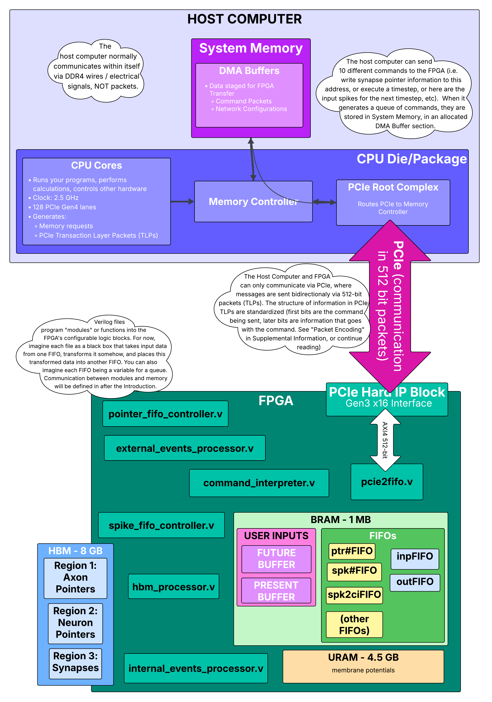

1.1 How the Network Looks in Hardware#
Before we explain how the network gets programmed, let’s understand where everything ends up. Think of the FPGA as having three distinct memory regions, each storing different parts of your network:
The Three Memory Regions#

Why Three Separate Memories?#
Each memory type has different characteristics optimized for its role:
Memory |
Capacity |
Access Speed |
Purpose |
Cost |
|---|---|---|---|---|
BRAM |
1 MB |
3 cycles @ 225 MHz (~13 ns) |
Frequently accessed, small data (input patterns) |
Expensive (on-chip SRAM) |
HBM |
8 GB |
~100-200 ns |
Large, infrequently changing data (network structure) |
Medium (external DRAM) |
URAM |
4.5 MB |
1 cycle @ 450 MHz (~2.2 ns) |
Frequently read/written, medium data (neuron states) |
Medium (on-chip DRAM-like) |
During initialization, we only program HBM (the network structure). BRAM gets written during runtime when inputs arrive, and URAM gets cleared to zero.
Detailed View: HBM Memory Layout for Our Example Network#
Let’s zoom in on exactly what gets written to HBM during initialization. We’ll use concrete addresses and values.
Network Indexing#
First, hs_api converts symbolic names to numerical indices:
Axons: a0=0, a1=1, a2=2, a3=3, a4=4
Hidden neurons: h0=0, h1=1, h2=2, h3=3, h4=4
Output neurons: o0=5, o1=6, o2=7, o3=8, o4=9
(Neurons are numbered sequentially: hidden neurons 0-4, output neurons 5-9)
HBM Region 1: Axon Pointers (Starting at address 0x0000)#
Each HBM row holds 8 pointers (8 pointers × 32 bits = 256 bits per row).
Row 0 (contains pointers for axons 0-7):
Byte Address: 0x0000_0000 to 0x0000_001F (32 bytes)
┌──────────────────────────────────────────────────────────────────┐
│ Axon 0 Pointer │ Axon 1 Pointer │ ... │ Axon 7 Pointer │
│ (a0) │ (a1) │ │ (unused) │
├──────────────────┼──────────────────┼─────┼─────────────────────┤
│ 32 bits │ 32 bits │ ... │ 32 bits │
│ [31:23] Length │ [31:23] Length │ │ All zeros │
│ [22:0] Start │ [22:0] Start │ │ │
└──────────────────┴──────────────────┴─────┴─────────────────────┘
Detailed breakdown:
Axon 0 pointer (bytes 0-3):
Binary: [31:23]=000000001, [22:0]=0000000000000000000
Meaning: Length = 1 row, Start = 0x0000 (absolute addr = 0x8000 + 0x0000)
Hex value: 0x0080_0000
Axon 1 pointer (bytes 4-7):
Binary: [31:23]=000000001, [22:0]=0000000000000000001
Meaning: Length = 1 row, Start = 0x0001 (absolute addr = 0x8000 + 0x0001)
Hex value: 0x0080_0001
Axon 2 pointer (bytes 8-11):
Hex value: 0x0080_0002
Axon 3 pointer (bytes 12-15):
Hex value: 0x0080_0003
Axon 4 pointer (bytes 16-19):
Hex value: 0x0080_0004
Axons 5-7 (bytes 20-31):
All zeros (unused)
Why “Start = 0x0000” becomes “absolute addr = 0x8000”? The start address in the pointer is relative to the synapse base address. The synapse region starts at HBM address 0x8000, so:
Absolute address = 0x8000 + pointer_start
Axon 0: 0x8000 + 0x0000 = 0x8000
Axon 1: 0x8000 + 0x0001 = 0x8001
Each synapse row is 32 bytes, so row 0x8001 is actually at byte address 0x8001 × 32 = 0x0001_0020.
HBM Region 2: Neuron Pointers (Starting at address 0x4000)#
Similar structure to axon pointers, but for neurons.
Row 0x4000 (contains pointers for neurons 0-7):
Hidden neurons h0-h4 (neuron indices 0-4):
Neuron 0 (h0) pointer:
Length = 1 row, Start = 0x0005 (absolute = 0x8000 + 0x0005 = 0x8005)
Hex: 0x0080_0005
Neuron 1 (h1) pointer:
Hex: 0x0080_0006
Neuron 2 (h2) pointer:
Hex: 0x0080_0007
Neuron 3 (h3) pointer:
Hex: 0x0080_0008
Neuron 4 (h4) pointer:
Hex: 0x0080_0009
Output neurons o0-o4 (neuron indices 5-9):
Neuron 5 (o0) pointer:
Length = 1 row, Start = 0x000A
Hex: 0x0080_000A
Neuron 6 (o1) pointer:
Hex: 0x0080_000B
... (similar for o2, o3, o4)
Why do output neurons have pointers? Even though output neurons don’t connect to other neurons in our network, they still need “synapses” with OpCode=100 (spike output entries). These entries tell the hardware: “When this neuron spikes, send the spike ID back to the host.”
HBM Region 3: Synapses (Starting at address 0x8000)#
This is where the actual connectivity and weights live. Each row is 256 bits = 8 synapses × 32 bits.
Synapse Format (32 bits per synapse):
[31:29] OpCode (3 bits):
000 = Regular synapse (send spike to another neuron)
100 = Output spike entry (send spike to host)
[28:16] Target Address (13 bits):
For OpCode=000: Index of target neuron
For OpCode=100: Index of neuron to report (same as source)
[15:0] Weight (16 bits):
Signed fixed-point value
Our network: All weights = 1000 = 0x03E8
Row 0x8000 (Axon a0’s synapses - a0 connects to h0, h1, h2, h3, h4):
Byte address: 0x8000 × 32 = 0x0001_0000
Synapse 0 (bytes 0-3): a0 → h0, weight=1000
[31:29]=000, [28:16]=0 (h0 is neuron index 0), [15:0]=1000
Binary: 000_0000000000000_0000001111101000
Hex: 0x0000_03E8
Synapse 1 (bytes 4-7): a0 → h1, weight=1000
[31:29]=000, [28:16]=1, [15:0]=1000
Hex: 0x0001_03E8
Synapse 2 (bytes 8-11): a0 → h2, weight=1000
Hex: 0x0002_03E8
Synapse 3 (bytes 12-15): a0 → h3, weight=1000
Hex: 0x0003_03E8
Synapse 4 (bytes 16-19): a0 → h4, weight=1000
Hex: 0x0004_03E8
Synapses 5-7 (bytes 20-31): Unused
All zeros: 0x0000_0000
Complete row as 256-bit hex value:
0x0000_0000_0000_0000_0000_0000_0004_03E8_0003_03E8_0002_03E8_0001_03E8_0000_03E8
└─ Syn 7 ─┘ └─ Syn 6 ─┘ └─ Syn 5 ─┘ └─ Syn 4 ─┘ └─ Syn 3 ─┘ └─ Syn 2 ─┘ └─ Syn 1 ─┘ └─ Syn 0 ─┘
Row 0x8001 (Axon a1’s synapses): Same pattern as row 0x8000 (a1 also connects to all 5 hidden neurons with weight=1000).
Rows 0x8002, 0x8003, 0x8004: Axons a2, a3, a4 (same pattern).
Row 0x8005 (Neuron h0’s output synapses - h0 connects to o0, o1, o2, o3, o4):
Synapse 0: h0 → o0, weight=1000
Target = 5 (o0 is neuron index 5)
Hex: 0x0005_03E8
Synapse 1: h0 → o1, weight=1000
Target = 6
Hex: 0x0006_03E8
Synapse 2: h0 → o2, weight=1000
Hex: 0x0007_03E8
Synapse 3: h0 → o3, weight=1000
Hex: 0x0008_03E8
Synapse 4: h0 → o4, weight=1000
Hex: 0x0009_03E8
Synapses 5-7: Unused (zeros)
Rows 0x8006 through 0x8009: Neurons h1, h2, h3, h4 output synapses (same pattern).
Row 0x800A (Output neuron o0’s “synapse” - really a spike output entry):
Synapse 0: OUTPUT SPIKE ENTRY for o0
[31:29]=100 (OpCode for spike output)
[28:16]=5 (o0's neuron index)
[15:0]=0 (weight not used for output entries)
Hex: 0x8005_0000
Synapses 1-7: Unused (zeros)
Rows 0x800B through 0x800E: Output neurons o1, o2, o3, o4 spike entries.
Total HBM usage for our network:
Axon pointers: 1 row (row 0)
Neuron pointers: 2 rows (rows 0x4000, 0x4001)
Synapses: 15 rows (rows 0x8000 through 0x800E)
Total: ~544 bytes (out of 8 GB available!)
This tiny network barely uses any HBM. Real networks with thousands of neurons would use megabytes to gigabytes.
What About Neuron States (URAM)?#
During initialization, URAM is simply cleared to zero. All membrane potentials start at V=0. The actual URAM organization:
Bank 0 (first 8,192 neurons):
Our entire network (10 neurons total) fits in Bank 0
Each URAM word holds 2 neurons (72 bits = 2 × 36 bits)
Word 0 (address 0x000):
Bits [35:0]: Neuron 0 (h0) membrane potential = 0x0_0000_0000 (V=0)
Bits [71:36]: Neuron 1 (h1) membrane potential = 0x0_0000_0000 (V=0)
Word 1 (address 0x001):
Bits [35:0]: Neuron 2 (h2) V=0
Bits [71:36]: Neuron 3 (h3) V=0
Word 2 (address 0x002):
Bits [35:0]: Neuron 4 (h4) V=0
Bits [71:36]: Neuron 5 (o0) V=0
Word 3 (address 0x003):
Bits [35:0]: Neuron 6 (o1) V=0
Bits [71:36]: Neuron 7 (o2) V=0
Word 4 (address 0x004):
Bits [35:0]: Neuron 8 (o3) V=0
Bits [71:36]: Neuron 9 (o4) V=0
Words 5-4095: Unused (but still cleared to zero for this core).
Summary: The Initialized Network State#
After CRI_network(target="CRI") completes initialization:
FPGA State:
├─ HBM
│ ├─ Axon Pointers (0x0000-0x3FFF): 5 axon pointers programmed
│ ├─ Neuron Pointers (0x4000-0x7FFF): 10 neuron pointers programmed
│ └─ Synapses (0x8000-...): 15 rows of synaptic connections programmed
├─ URAM
│ └─ All neurons (h0-h4, o0-o4): Membrane potentials = 0
└─ BRAM
└─ Input spike patterns: Empty (will be filled during runtime)
The network structure is now frozen in HBM.
Neuron states (URAM) will change during execution.
Input patterns (BRAM) will be written each timestep.